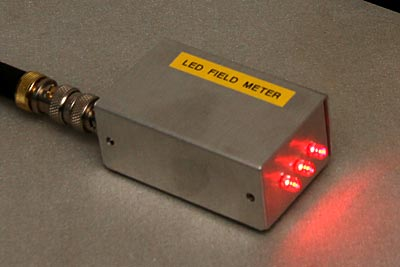
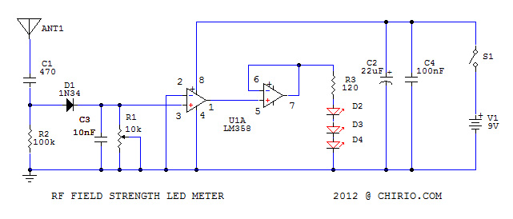
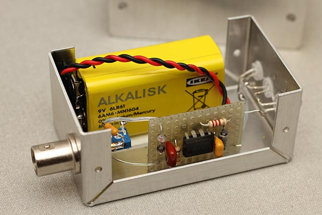
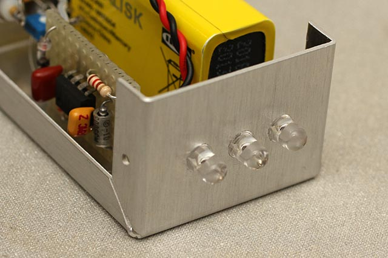
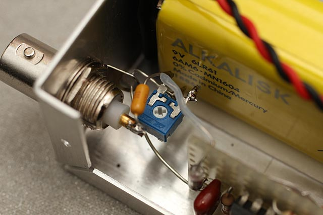

Radio & antenne
Rilevatore di campo radiofrequenza a LED
RF Field Strength LED Meter
Indice della pagina
Premessa
Maggio 2014
Questo circuito rappresenta un rilevatore di segnale Radio Frequenza (RF), ci indica la presenza di emissione radio su un vasto spettro di frequenze da poche migliaia di Hz fino oltre 2000 MHz segnalando con l'accensione dei LED il segnale di aggancio cellulari 3G.
Vista la buona sensibilità di ingresso può segnalare la presenza di emissioni radio insospettate, come rilevare radio spie (radio Bug), è anche utile per verificare alimentatori switching che emettono forti disturbi fastidiosi per chi vuole fare ascolto di Onde Corte.
Può anche essere utilizzato per verificare il livello di segnale antenna TV amplificata.

Lo schema proposto non effettua una misura del segnale, ma solo il rilevamento a breve distanza.
Sull'ingresso BNC è possibile collegare svariate antenne più adatte a ricevere la frequenza da analizzare.
Il funzionamento è garantito da una batteria da 9V, il consumo in Stand-by è minore di 1 mA.
S chema elettrico

- Sull'ingresso bisogna collegare una antenna, anche pochi cm bastano per rilevare il segnale, per una maggiore sensibilità alla frequenza più basse si consiglia uno stilo da almeno 40-50cm.
- Il condensatore C1 taglia le frequenze domestiche inferiori ai 10 kHz, regolando la R1 possiamo cambiare la sensibilità dell'ingresso, lontano da fonti RF, andremo regolare R1 per fare spegnere i led sulla soglia di intervento.
- Non ci sono induttori, quindi l'ingresso accetta un vasto spettro di frequenze. Al posto della R2 è possibile mettere un circuito risonante composto da un condensatore variabile e induttore, così da avere un circuito selettivo solo per la frequenza che ci interessa.
- Il segnale radio viene rivelato dal diodo D1 che per migliore sensibilità deve essere al germanio, il circuito funziona anche con un diodo al Si comune come il 1N4148 o simili, si può anche usare la giunzione base-Emettiore di un transistor RF.
- Il segnale rilevato e convertito in un valore di pochi mV viene applicato sul condensatore C3 che lo livella a una costante di tempo tale d evitare il rapido lampeggiare dei led, il LM 358 in configurazione comparatore a 0V, porta l'uscita a valori positivi appena il segnale supera la soglia di off-set che per il LM358 è di 3-4mV. Questo è il valore minimo di segnale che leggeremo in ingresso. Per migliorare la sensibilità consiglio l'uso di operazionali più costosi con soglia off-set minore del mV.
- Lo stadio successivo in configurazione inseguitore serve da amplificatore guadagno 1 per pilotare direttamente i led con una corrente max di 15mA, più che buona per dare una forte luminosità ai 3 led rossi da 5mm posti in serie.
- Sono stati usati 3 led RED per avere una forte segnalazione luminosa con basse perdite sulla resistenza.
- Il segnalatore RF è ben visibile a parecchi metri, anche di giorno....
Realizzazione

Ecco il circuito assemblato dentro a una scatola metallica di piccole dimensioni. La semplicità dello schema permette di fare una veloce realizzazione anche solo usando una basetta millefori.
Il connettore BNC ci permette di applicare i più svariati tipi di antenna e anche cavi collegati ad antenne specifiche.
La batteria in questo caso è collegata direttamente senza interruttore in quanto il basso consumo ci da molte decine di ore di funzionamento.

I tre led vengono fissati all'interno con un po’ di colla cyanoacrilica

Particolare sul gruppo ingresso, per rilevare anche le frequenze oltre i 1000 MHz è bene usare un trimmer di piccole dimensioni, come pure curare la disposizione dei componenti.
Verifica segnale ingresso.
Collegando l'ingresso del RF LED Meter al generatore RF con uscita 50 OHM, e regolando il trimmer per il segnale più sensibile, si rileva quanto segue:
|
frequenza MHz |
segnale mV |
dBm |
|---|---|---|
|
1k |
33.1 |
-16.6 |
| 10k | 8.03 | -28.9 |
| 100k | 3.42 | -36.3 |
|
10 |
3.5 |
-36.1 |
|
50 |
3.89 |
-35.0 |
|
125 |
4.0 |
-34.0 |
|
250 |
5.62 |
-32.0 |
|
500 |
7.40 |
-29.6 |
|
1000 |
9.32 |
-27.6 |
| 1500 | 16 | -22.8 |
| 1800 | 24 | -19.5 |
| 2000 | 50 | -13.0 |
| 3000 | 56 | -12.0 |
Questi sono i valori minimi di segnale ingresso che faranno accendere i led, il meter legge ancora bene il segnale dei cellulari fino a 2100 MHz come pure con attenuazione il segnale dei WiFi a 2400 MHz, utilizzando un diodo per RF, ed un pezzo di antenna di solo 3.5cm meglio si rivelano questi segnali oltre i 2000 MHz.
Portando il condensatore C1 a 0.1uF è possibile avere accensione led anche con campo elettromagnetico a 50 Hz.
Per lavorare con segnali ingresso molto bassi, si può aggiungere un amplificatore a FET in grado di leggere valori di uV, va comunque rivisto il circuito per ridurre l'ingresso disturbi.
Applicazioni
Il LED RF Meter, è utile per visualizzare la presenza di Radiofrequenza anche a valori bassi, sempre nociva alla salute, come pure si possono individuare microfoni spia trasmittenti nascosti, o utile in laboratorio elettronico per verificare il funzionamento di circuiti RF.
Utile per regolare il segnale di impianti TV, si regola prima il trimmer per fare accendere i led con una presa dove il segnale è corretto, poi si utilizza il RF LED METER sulla presa da misurare e si regola l'amplificatore antenna TV per dare lo stesso segnale.
© Roberto Chirio: all rights reserved.